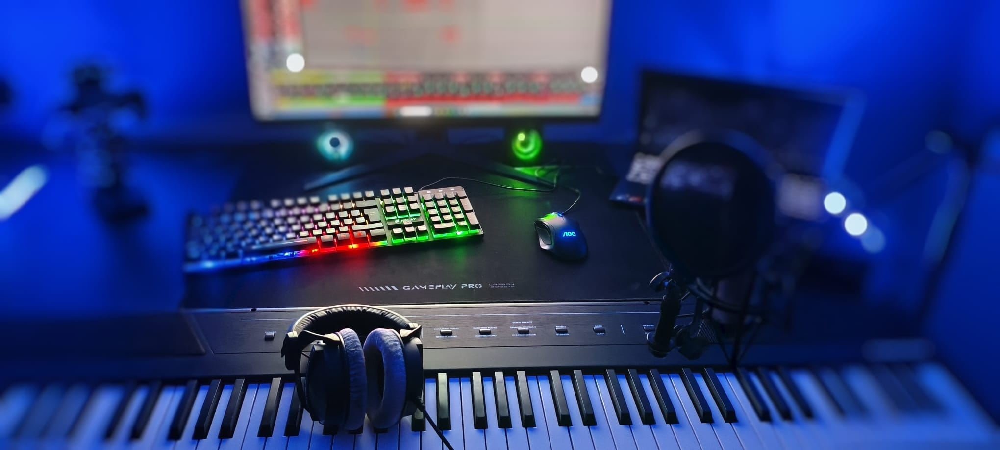
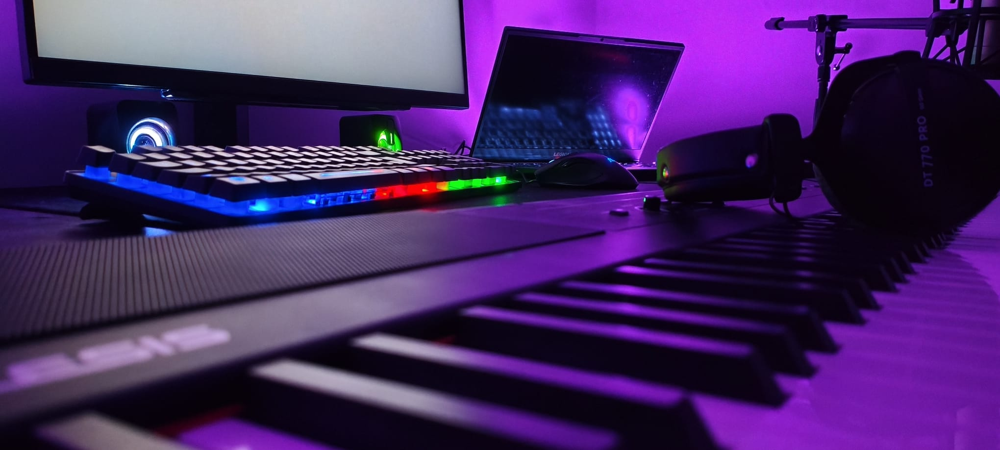
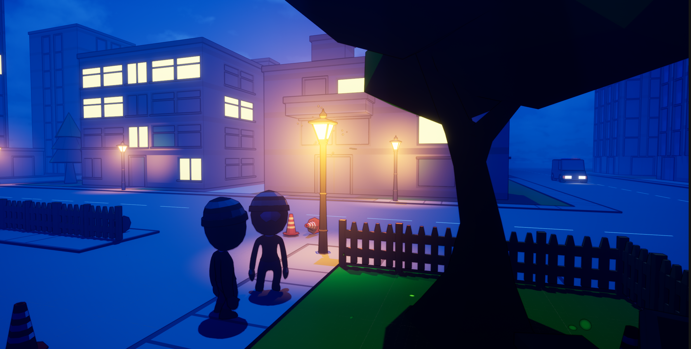
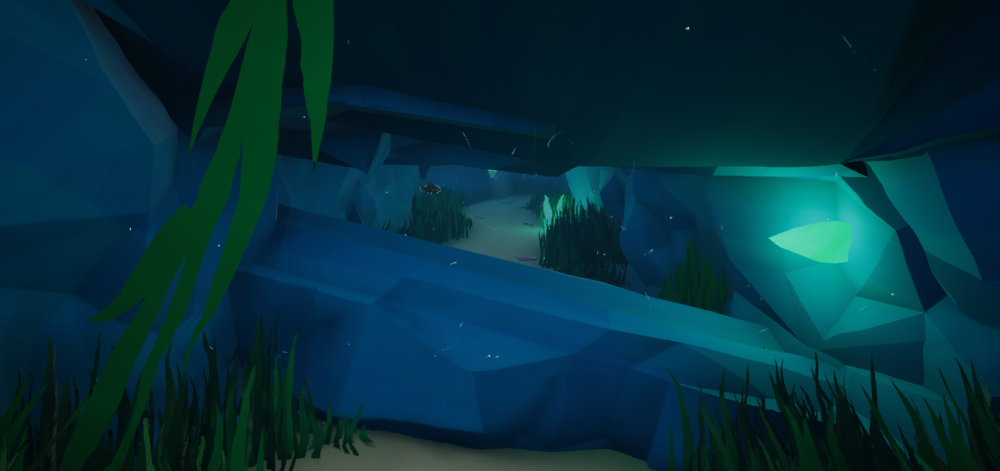
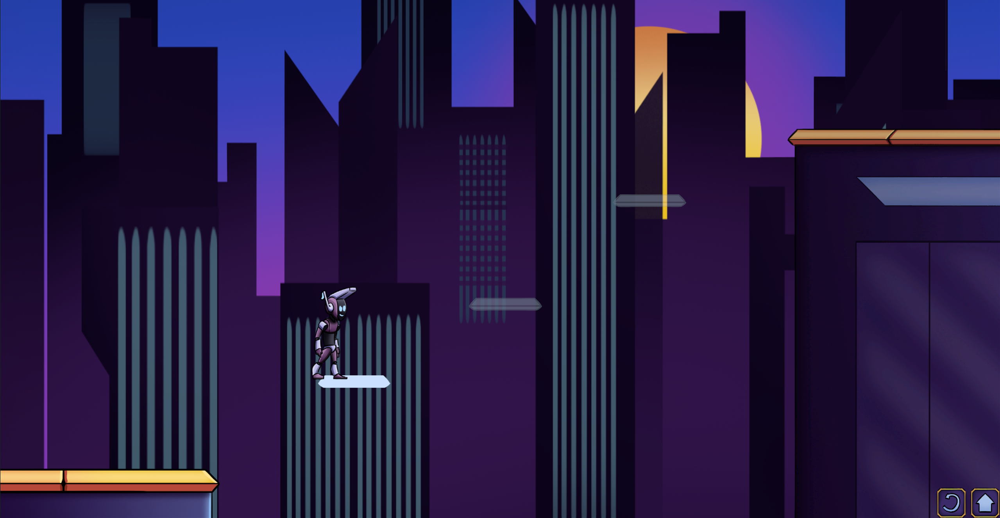
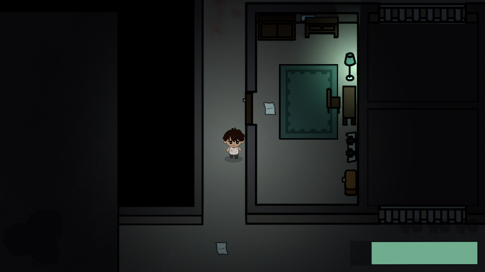
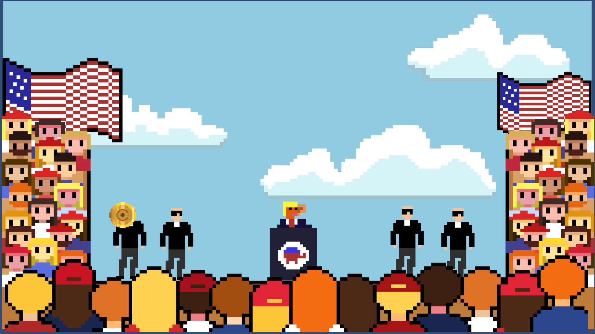
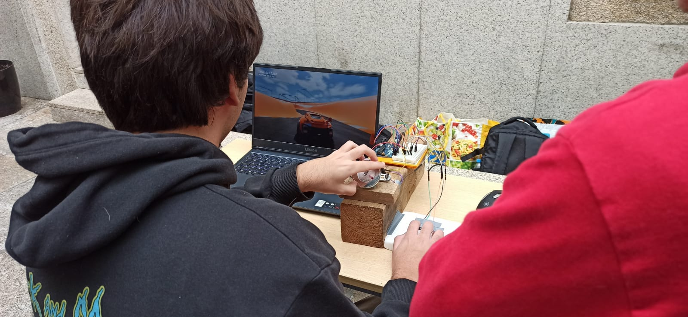
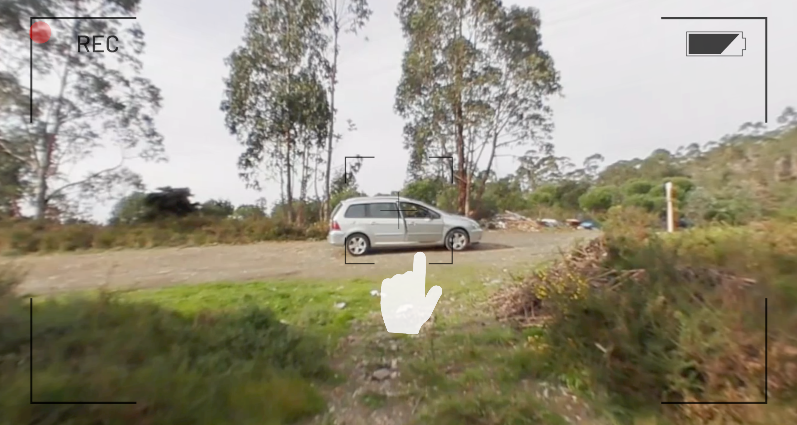

Rodrigo
Santos.
I am a
Projects

01
Disasterpiece
3D Physics based Co-op Game
Disasterpiece
Explore Case Study

02
Huddle
3D Underwater Arcade Survival Game
Huddle
Explore Case Study

03
Intempo
2D Rhythm Platformer Game
Intempo
Explore Case Study

04
Hurrya
2D Top-Down Survival Game
Hurrya
Explore Case Study

05
EarForceOne
News Game
EarForceOne
Explore Case Study

06
Other Works

Arduino Car
Digital Arts
Arduino Car

AV360 Horror
Interactive
AV360 Horror

Unravel
Sound Alike
Unravel

Maybe I'm Wrong
Prototype
Maybe I'm Wrong
My
Story.
My journey began in music, where I developed the rigor and discipline that define my work ethic today.
Get in
touch.
rodrigo.albusantos19@gmail.com
Copied to Clipboard!